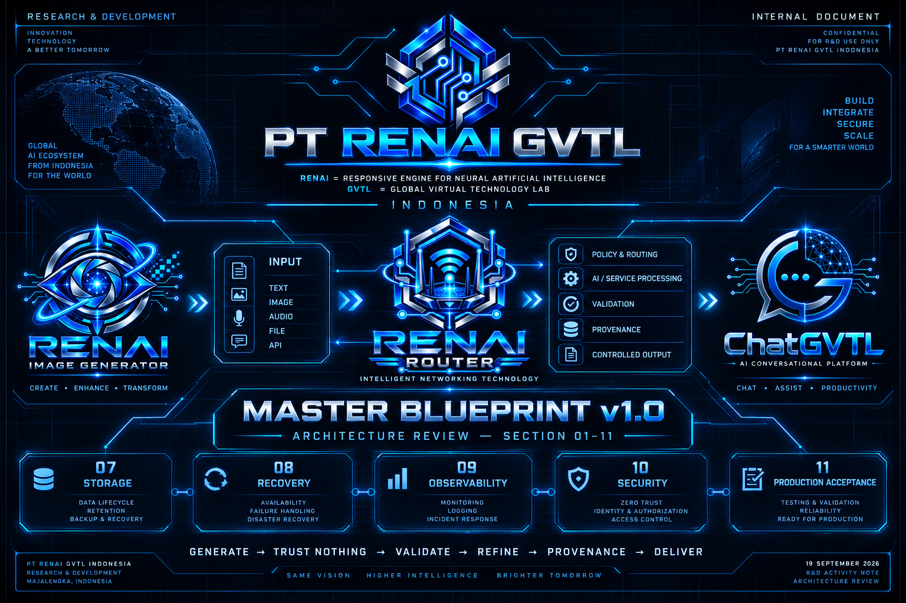

Internal R&D Meeting yang melanjutkan review RENAI Router Master Blueprint v1.0 dari Section 07 hingga Section 11.

Pada 19 September 2026 , PT RENAI GVTL Indonesia melanjutkan review dan konsolidasi RENAI Router Master Blueprint v1.0 .
Review terbaru mencakup Section 07 hingga Section 11 , dengan masing-masing section mendapatkan status APPROVED / COMPLETED .
Checkpoint ini menjadi kelanjutan dari Section 01–06 yang sebelumnya telah direview dan dikonsolidasikan.
Status: ✅ APPROVED / COMPLETED
Retention dibedakan berdasarkan jenis data.
Status: ✅ APPROVED / COMPLETED
Pada bagian availability, failure, dan recovery, Router tetap ditetapkan sebagai jalur kontrol wajib .
Status: ✅ APPROVED / COMPLETED
Informasi yang diberikan kepada pengguna dibatasi pada informasi error umum.
Dengan demikian, informasi observability dan incident response internal tetap dipisahkan dari informasi yang diterima pengguna.
Status: ✅ APPROVED / COMPLETED
Status: ✅ APPROVED / COMPLETED
Production-ready tidak ditentukan hanya berdasarkan hasil unit test.
Critical controls dan failure scenarios wajib diuji sebelum production acceptance.
Cakupan pengujian termasuk:
Section 01–06 sebelumnya telah direview dan dikonsolidasikan.
Section 07–11 telah diselesaikan dalam review terbaru pada 19 September 2026.
RENAI Router Master Blueprint v1.0
Kini telah terkonsolidasi sampai Section 11 dan siap dilanjutkan ke Section 12 pada review berikutnya.
Review berikutnya akan dilanjutkan pada:
Section 12 — Governance, Policy & Operational Control
Status: 🟢 Meeting / Review checkpoint selesai
Dokumen: RENAI Router Master Blueprint v1.0 — Review Consolidated Section 01–11
Date:
19 September 2026
Organization:
PT RENAI GVTL Indonesia —
Research & Development (R&D)
Review 19 September 2026 menandai selesainya konsolidasi RENAI Router Master Blueprint v1.0 hingga Section 11.
Section 07 sampai Section 11 telah mendapatkan status APPROVED / COMPLETED , sementara pembahasan berikutnya diarahkan ke Section 12 — Governance, Policy & Operational Control .
© PT RENAI GVTL Indonesia — Research & Development (R&D)